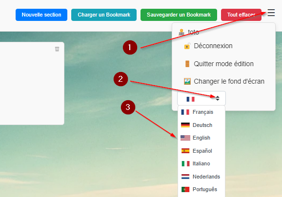
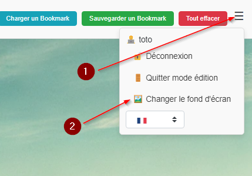
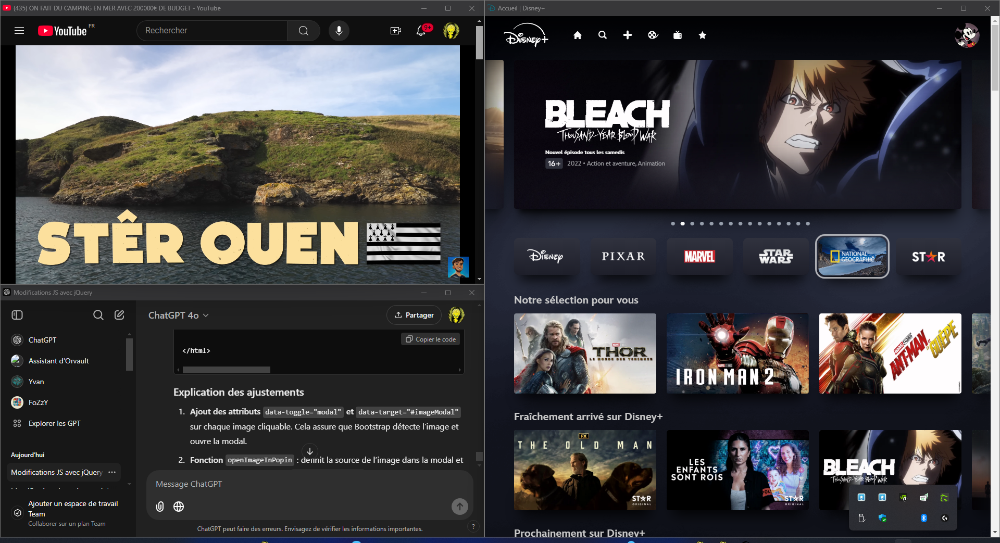

Cette application vous permet de gérer vos signets en ligne de manière simple et intuitive. Suivez ce guide pour apprendre à ajouter des sections, des signets, personnaliser l'interface et bien plus encore.
Le mode édition permet de déplacer, renommer et supprimer des sections et des signets.
Pour organiser vos signets, vous pouvez ajouter des sections en utilisant le bouton Nouvelle Section dans la barre de menu.
Pour ajouter un signet dans une section, cliquez sur l'icône ➕ à côté de la section concernée.
Vous pouvez modifier la langue de l'interface en utilisant le sélecteur de langue dans le menu burger.
Pour personnaliser l'arrière-plan, cliquez sur Personnaliser le fond d'écran dans le menu. Vous pouvez choisir une image parmi celles disponibles.
Pour télécharger l'application, cliquez sur le bouton ci-dessous :
Télécharger Launcher.exeAttention : Si Windows Defender empêche l'exécution, procédez comme suit pour autoriser l'installation :
Vous pouvez désormais afficher vos pages web avec un maximum d'espace pour le contenu
